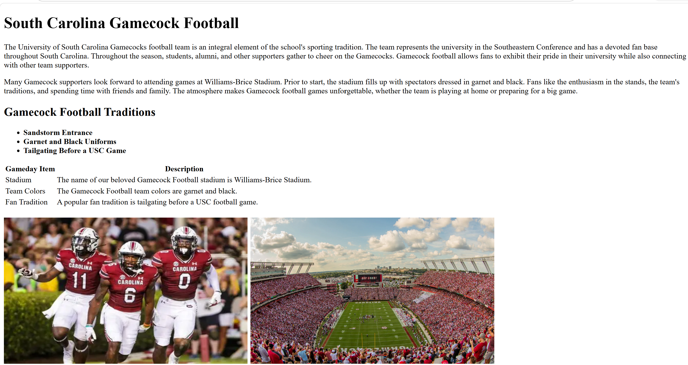
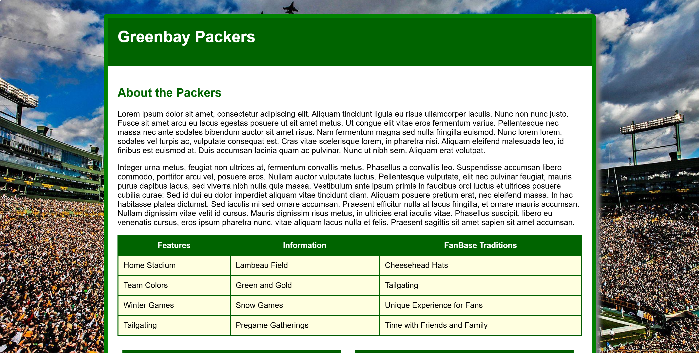
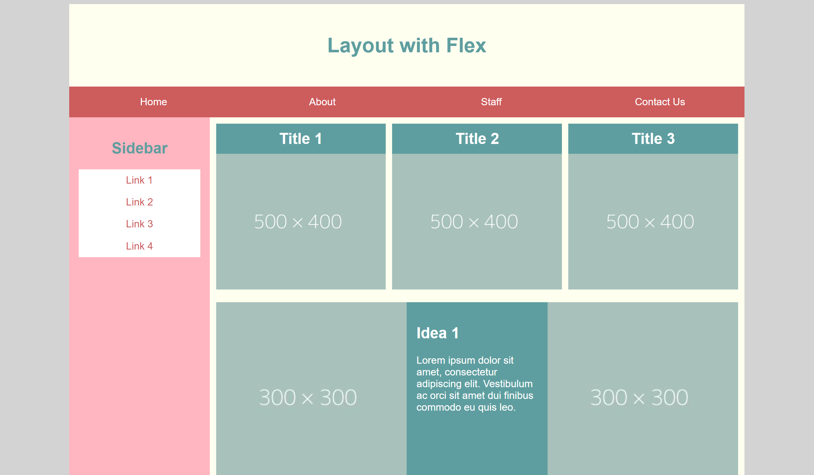
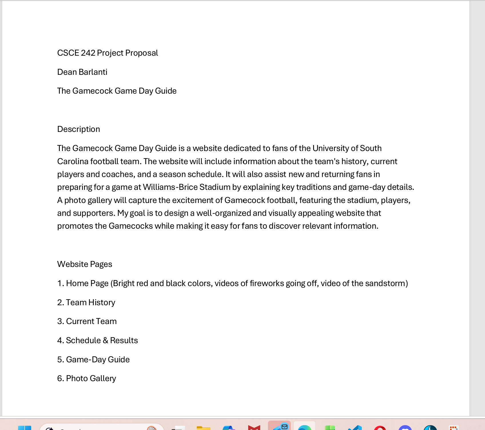

HTML Introduction

For this assignment, I built an informational webpage about Gamecock football using basic HTML. I used headings, paragraphs, images, links, and a table to organize the content.
This course teaches students how to build and organize websites with various web development tools. We are learning the basics of HTML, which gives a webpage its structure and content. Later in the course, we'll utilize CSS to improve the appearance of our pages and JavaScript to add interactive features. I'm excited to learn how to construct websites and improve my skills during the semester.

For this assignment, I built an informational webpage about Gamecock football using basic HTML. I used headings, paragraphs, images, links, and a table to organize the content.

For this assignment, I created a Green Bay Packers webpage and used CSS to give it a matching green-and-gold design. I styled the images, table, colors, and readable content area.

For this assignment, I used Flexbox to create a page with a navigation bar, sidebar, image cards, and Idea sections. I also added a media query so the layout changes into one column on smaller screens.

This proposal outlines the topic I selected for my semester web project. It explains the purpose of the website, its planned content, and how I will create an organized and useful experience for visitors.